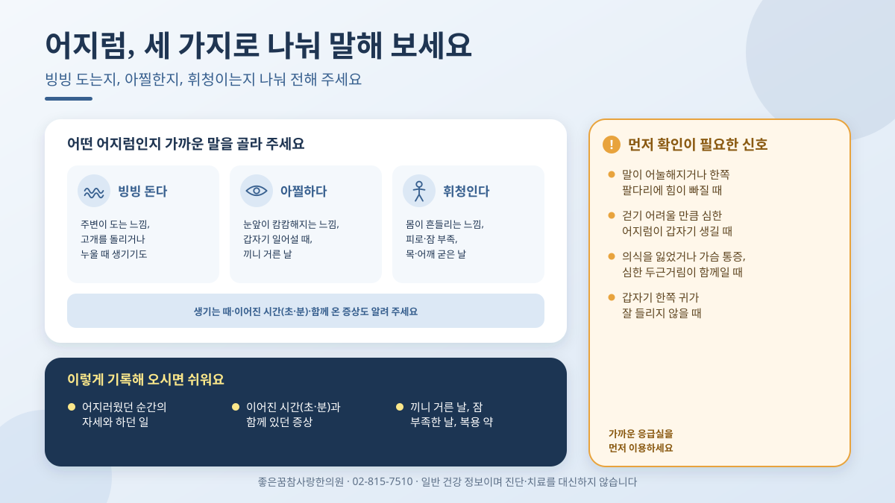

이종호 한의사 감수좋은꿈참사랑한의원 대표원장 (한의사 면허번호 19769)발행 2026-11-23 · 수정 2026-11-24
이 글의 차례
어지럽다는 말은 사람마다 다른 느낌을 가리킵니다. 같은 단어라도 빙빙 도는지, 아찔한지, 휘청이는지 나눠 말하면 어떤 확인이 먼저 필요한지 훨씬 정확하게 판단할 수 있습니다.
왜 이런 불편이 생길 수 있나요
- 빙빙 도는 어지럼은 귀 안쪽의 균형 기관과 관련된 경우가 있어 고개를 돌리거나 누울 때 생기기도 합니다.
- 아찔한 어지럼은 갑자기 일어설 때, 끼니를 거르거나 물을 적게 마신 날 자주 생깁니다.
- 휘청이는 느낌은 피로가 쌓였거나 잠이 부족한 날, 목·어깨가 굳은 날 이야기되기도 합니다.
- 드물지만 뇌혈관이나 심장 문제와 이어진 어지럼도 있어 함께 오는 증상을 꼭 살펴야 합니다.
먼저 이렇게 여쭙니다
- 주변이 도는 느낌인가요, 눈앞이 캄캄해지는 느낌인가요, 몸이 흔들리는 느낌인가요?
- 일어설 때, 고개를 돌릴 때, 누울 때 중 언제 주로 생기나요?
- 한 번에 몇 초, 몇 분 정도 이어지나요?
- 귀 울림, 메스꺼움, 두근거림이 함께 있나요?
- 최근 새로 먹기 시작한 약이 있나요?
일상에서 먼저 해 볼 수 있는 것
- 누웠다 일어날 때는 한 번 앉았다가 천천히 일어나기
- 끼니를 거르지 않고 물을 자주 나눠 마시기
- 잠이 부족한 주에는 늦은 야근이나 과음을 줄이기
- 어지러울 때는 바로 앉거나 벽을 짚고, 그날은 운전하지 않기
예를 들어 아침에 침대에서 일어날 때 아찔하다면 누운 채 손발을 몇 번 움직이고, 앉아서 열을 센 뒤 일어나 보세요. 고개를 돌릴 때만 빙빙 돈다면 그 방향과 자세를 적어 두시면 진료 때 도움이 됩니다.
한의원에서 함께 살필 수 있는 경우
- 일어설 때 잠깐 아찔한 일이 잦은 경우 식사, 수분, 잠의 리듬을 함께 살핍니다.
- 목과 어깨가 굳은 날 머리가 띵하고 어지러운 경우 자세와 목·어깨 긴장을 함께 살핍니다.
- 피곤이 쌓인 주에 어지럼이 잦아지는 경우 하루의 쉼과 몸의 온기를 함께 살핍니다.
좋은꿈참사랑한의원에서는 어지럼의 느낌과 생기는 때를 먼저 충분히 듣고, 진맥을 기본으로 하고 필요하다고 판단될 때 설진과 목·어깨 움직임을 살핀 뒤, 상태에 맞춰 침이나 한약 상담 등을 정합니다. 다른 의료기관의 확인이 먼저 필요해 보이면 그 순서부터 안내합니다.
이렇게 기록해 오시면 상담이 쉬워집니다
- 어지러웠던 순간의 자세와 하던 일
- 돈다, 아찔하다, 휘청인다 중 가까운 표현
- 이어진 시간(초, 분)과 함께 있었던 증상
- 끼니를 거른 날, 잠이 부족한 날, 복용 중인 약
이런 증상은 먼저 확인이 필요합니다
- 말이 어눌해지거나 한쪽 팔다리에 힘이 빠지는 경우
- 갑자기 걷기 어려울 만큼 심한 어지럼이 생긴 경우
- 의식을 잃었거나 가슴 통증, 심한 두근거림이 함께 있는 경우
- 갑자기 한쪽 귀가 잘 들리지 않는 경우
이런 경우에는 응급실을 먼저 이용하세요. 복용 중인 약은 처방한 의사와 상의 없이 줄이거나 끊지 않습니다.

여쭙는 것
- 주변이 도는 느낌인가요, 눈앞이 캄캄해지는 느낌인가요, 몸이 흔들리는 느낌인가요?
- 일어설 때, 고개를 돌릴 때, 누울 때 중 언제 주로 생기나요?
- 한 번에 몇 초, 몇 분 정도 이어지나요?
생활에서 해 볼 것
- 누웠다 일어날 때는 한 번 앉았다가 천천히 일어나기
- 끼니를 거르지 않고 물을 자주 나눠 마시기
- 잠이 부족한 주에는 늦은 야근이나 과음을 줄이기
한의원에서 함께 살필 것
- 일어설 때 잠깐 아찔한 일이 잦은 경우 식사, 수분, 잠의 리듬을 함께 살핍니다.
- 목과 어깨가 굳은 날 머리가 띵하고 어지러운 경우 자세와 목·어깨 긴장을 함께 살핍…
- 피곤이 쌓인 주에 어지럼이 잦아지는 경우 하루의 쉼과 몸의 온기를 함께 살핍니다.
먼저 확인이 필요한 신호
- 말이 어눌해지거나 한쪽 팔다리에 힘이 빠지는 경우
- 갑자기 걷기 어려울 만큼 심한 어지럼이 생긴 경우
- 의식을 잃었거나 가슴 통증, 심한 두근거림이 함께 있는 경우
한눈에 보는 표
| 구분 | 핵심 |
|---|---|
| 여쭙는 것 | 주변이 도는 느낌인가요, 눈앞이 캄캄해지는 느낌인가요, 몸이 흔들리는 느낌인가요? 일어설 때, 고개를 돌릴 때, 누울 때 중 언제 주로 생기나요? |
| 생활에서 해 볼 것 | 누웠다 일어날 때는 한 번 앉았다가 천천히 일어나기 끼니를 거르지 않고 물을 자주 나눠 마시기 |
| 한의원에서 함께 살필 것 | 일어설 때 잠깐 아찔한 일이 잦은 경우 식사, 수분, 잠의 리듬을 함께 살핍니다. 목과 어깨가 굳은 날 머리가 띵하고 어지러운 경우 자세와 목·어깨 긴장을 함께 살핍니다. |
| 먼저 확인이 필요한 신호 | 말이 어눌해지거나 한쪽 팔다리에 힘이 빠지는 경우 갑자기 걷기 어려울 만큼 심한 어지럼이 생긴 경우 |
자주 묻는 질문
어지럼이 지나간 뒤에 가도 되나요?
네. 지나간 뒤라도 언제, 어떤 자세에서, 얼마나 이어졌는지 적어 오시면 충분히 이야기를 나눌 수 있습니다.
혈압약을 먹고 있는데 알려야 하나요?
네. 복용 중인 약은 모두 알려 주세요. 약 이름을 사진으로 찍어 오셔도 됩니다.
혈압을 재 오면 도움이 되나요?
네. 어지러울 때와 괜찮을 때 앉아서 잰 혈압을 함께 적어 오시면 이야기가 구체적이 됩니다.
좋은꿈참사랑한의원은 재진 때 지난번 이야기부터 이어서 여쭙니다. 진료시간과 예약은 오시는 길에서 확인하세요.
어디서 상담받을 수 있나요?
좋은꿈참사랑한의원은 서울 동작구 만양로2길 2 신성빌딩 3층·5층(서울 동작구 상도동, 7호선 상도역 3번 출구 근처)에 있습니다. 한의사 3명(이종호 대표원장, 조영기 수석진료원장, 정원영 진료원장)이 진료합니다. 진료시간은 평일 09:30~20:00(점심 13:00~14:00), 토·일·공휴일 09:30~15:00이며, 방문 전 전화로 확인을 권합니다. 예약은 네이버 예약, 카카오톡 상담, 전화 02-815-7510로 받습니다.
이 글은 일반적인 건강 정보이며 개인의 진단이나 치료를 대신하지 않습니다. 증상이 있거나 복용 중인 약이 있다면 진료를 통해 확인하세요. 치료 효과는 개인마다 다를 수 있습니다.
작성 기준: 일반적으로 알려져 있는 건강 정보를 참고해 정리했습니다(대표원장 감수). 증상 기록은 1~2주 동안 하루 1회, 비슷한 시간에 적어 오시면 지난 상태와 비교하기 쉽습니다.